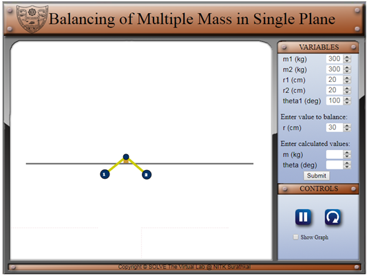
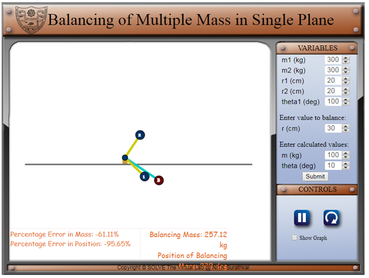

Objective
After completing the simulation experiments on balancing of multiple masses in single plane one should be able to
- Calculate the additional mass required for balancing the unbalanced force.
- Find out the angular position of the additional masses used for balancing.
Theory
Excessive vibration in rotating machinery can cause unacceptable levels of noise and, more importantly, substantially reduce the life of shaft bearings. Hence, the ideal would be to remove all causes of vibration and run the unit totally "smooth". Unfortunately, in practice, the ideal cannot be achieved and, whatever one does, some inherent cause of vibration, or unbalance, will remain.The best one can do is to reduce this unbalance to a level that will not adversely effect the bearing life and will reduce noise levels to an acceptable level. The process of reducing the out-of-balance forces that cause vibration in rotating machinery is called "Balancing". The unbalance is caused by an effective displacement of the mass centre line from the true axis caused by some mass eccentricity in the unit.
The process of "Balancing" is the removal or addition of weight to the unit such that this effective mass centre line approaches the true axis. The simplest form of, "Static", balance involves placing the unit on low friction bearings and allowing it to rotate and "settle" with the "heaviest" point falling to the bottom. Material is then removed from this point (or added at the top point) and the unit gently rotated until, when stopping, the new "heavy" point again falls to the bottom. This process is then repeated until no obvious "heavy" point seems to exist.
Advancing this one stage further, the unit can be mounted on a purpose built "Balancing Machine" which has its bearings connected to sensors (displacement or acceleration type depending on the design of the machine) which detect the "heavy" point, in relation to a datum on the unit, whilst it is being rotated. This increases the sensitivity and, hence, the accuracy of the balance. If one considers correction at a single position along the length of the unit, the balance is said to be "Single-Plane".
If the unit being balanced is very short in relation to it’s diameter Single-Plane Balance will, normally, be very acceptable. However, if the unit has any appreciable length, correction at a single plane, say in the centre of the unit, will probably give a dangerously false correction. If you consider a shaft with two flanged ends, it is quite likely that the major unbalance will arise in the two flanges, probably caused by the inherent concentricity machining errors. The two "heavy" points may fall in precisely the same angular position but, more likely, they will not and, thus, the displacement of the mass centre lines from the true axis will be a different orientation in both ends, as will the size of this displacement. If the unit is now being balanced by the Static or Single-Plane method, as it can easily be, the overall effect would appear to be correct on the Balancing Machine but, in operation, since no account has been taken of the vibration between the two ends, a "Force Couple" will exist which will again introduce vibration in the two machinery shafts
Analitical method to find the magnitude and position of the balancing mass:
Consider any number of masses (say four) of magnitude m1, m2, m3 and m4 at distance of r1, r2, r3 and r4 from the axis of the rotating shaft. Let θ1, θ2, θ3 and θ4 be the angles of these masses with horizontal line ox, as shown in figure. Let these masses rotate about the axis through O and perpendicular to the plane of paper, with a constant angular velocity of ω rad/sec.
The amount of balanced mass is the resultant of square root of sum of square of horizontal and vertical forces, which is acting in plane
So the magnitude of resultant centrifugal force
The sum of horizontal component of centrifugal force
The sum of vertical component of centrifugal force
Resultant force vector Fc making inclination with horizontal, which is equals to θ

Objective:
Calculate balanced mass (mb) and position (θb) for the given unbalanced masses (m1 and m2) and position (r1, r2, θ1 and θ2) and compare the answers in the simulator.
Steps:
- As we can see in simulator, two unabalanced masses are rotates at fixed angular speed(ω = 2rad/sec) in single plane. The unbalanced mass(m1 and m2) , position (r1 and r2) and angular position(θ1 and θ2) can be input to simulator at right hand side in the simulator.
- To find out the mass to balance, radius of the balance mass from center of axis of must be given. Since the algebraic equation can only find force to balanced, which is equal to mbrb.
 - Finally, enter the calculated values of unbalanced mass and angle information in simulator and click the submit button. The results will be displaced in simulator for compare your calculator value.



- Assume the suitable data and calculate the mass and position (angle) and compare the result with graphical.